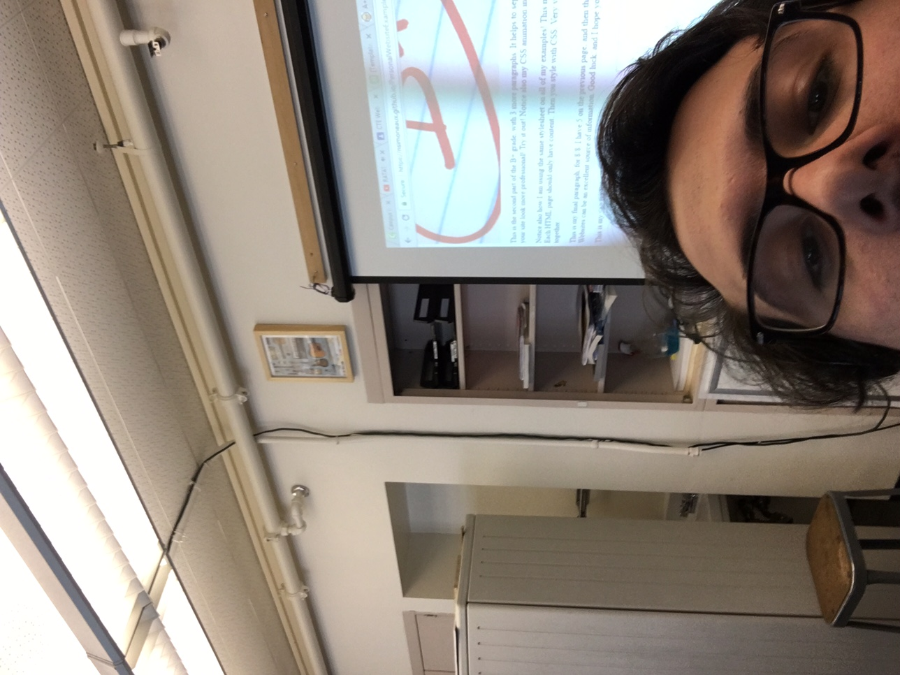
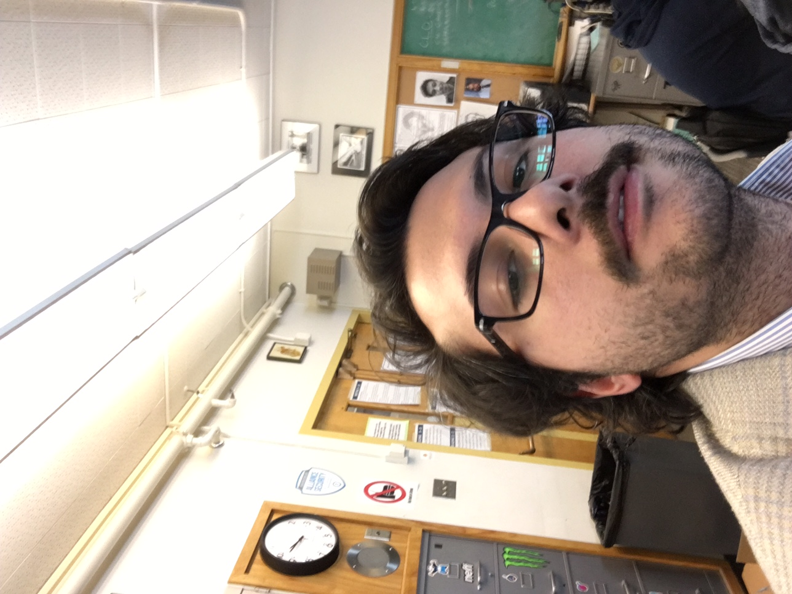

This is the second part of the B+ grade, with 3 more paragraphs. It helps to separate the pages so each page can have its own information. It also makes your site look more professional! Try it out! Notice also my CSS animation in the header!
Notice also how I am using the same stylesheet on all of my examples! This makes it easier to design once, and then apply your styles to multiple pages. Each HTML page should only have content. Then you style with CSS. Very very time saving, and helps to keep everything looking like it belongs together.
This is my final paragraph, for 8/8. I have 5 on the previous page, and then three on this page. I like writing, and glad you took the time to read it! Websites can be an excellent source of information. Good luck, and I hope you get a 3/4 at least -- but if you have made it this far, try to get the 4/4!
This is my <a> tag link to the main page.
 Two cool images of my own creation!